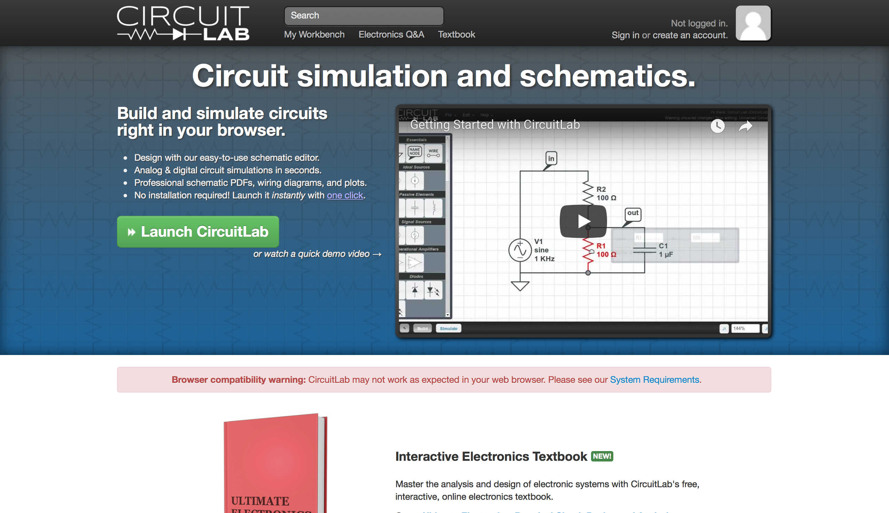
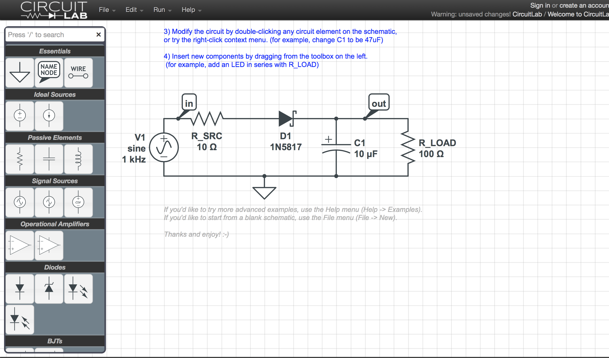
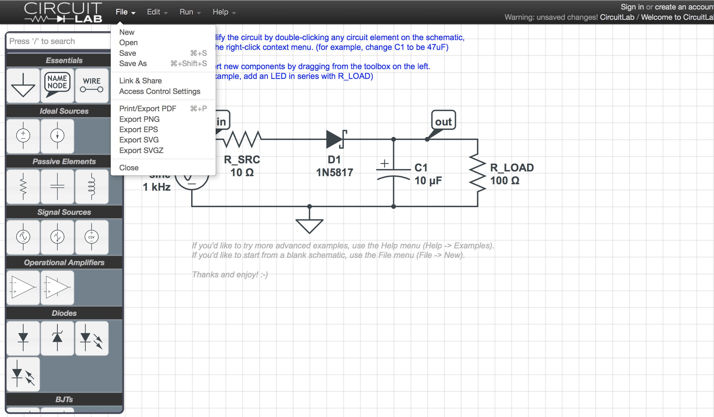
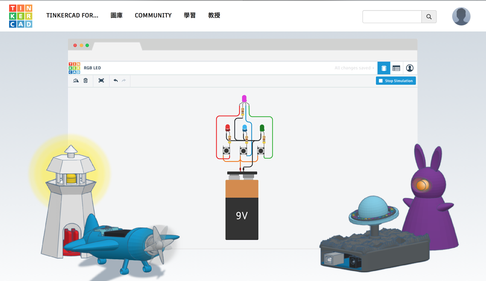
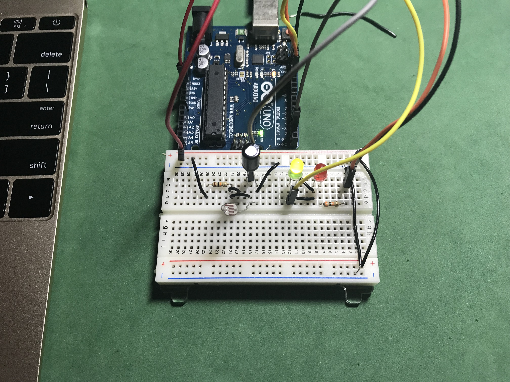
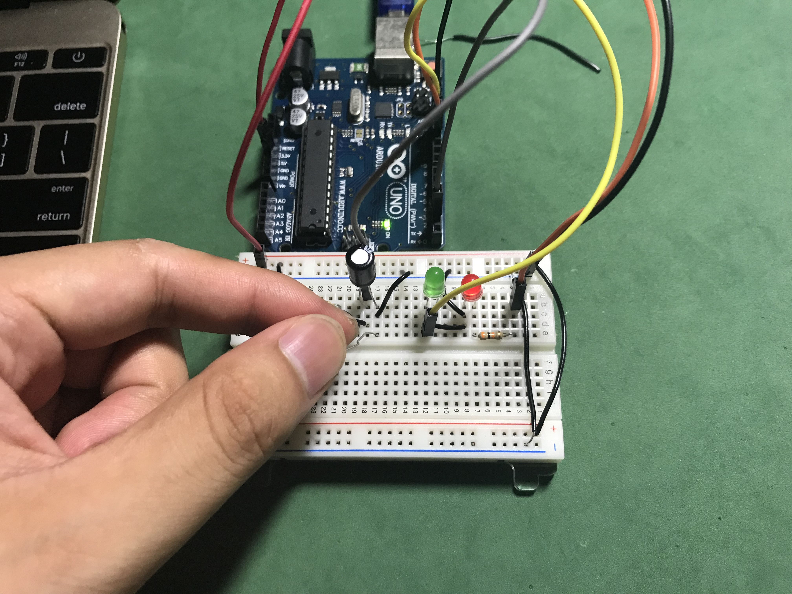
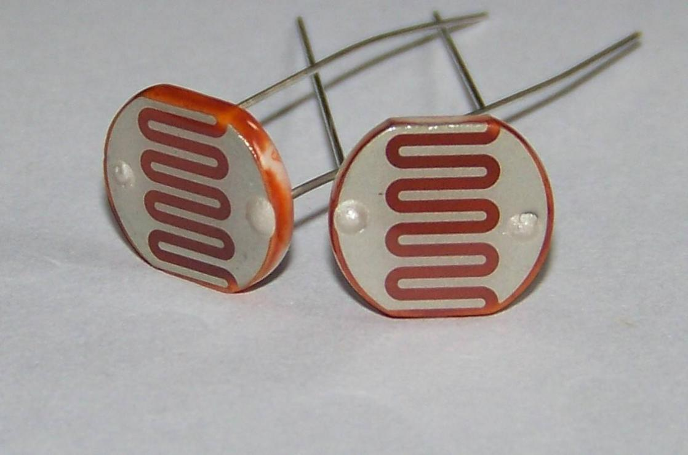
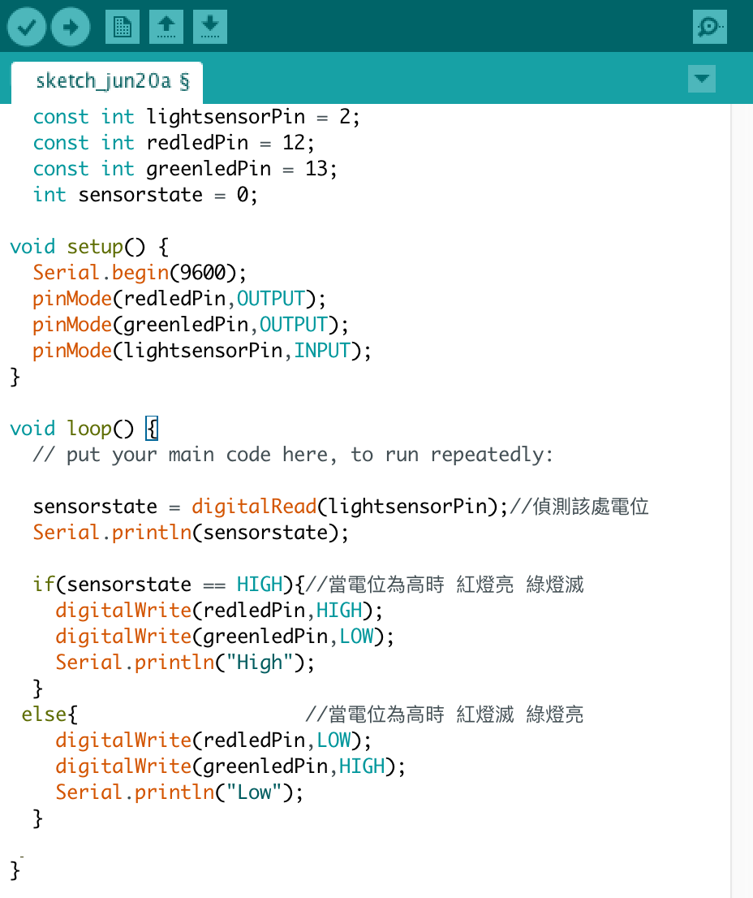
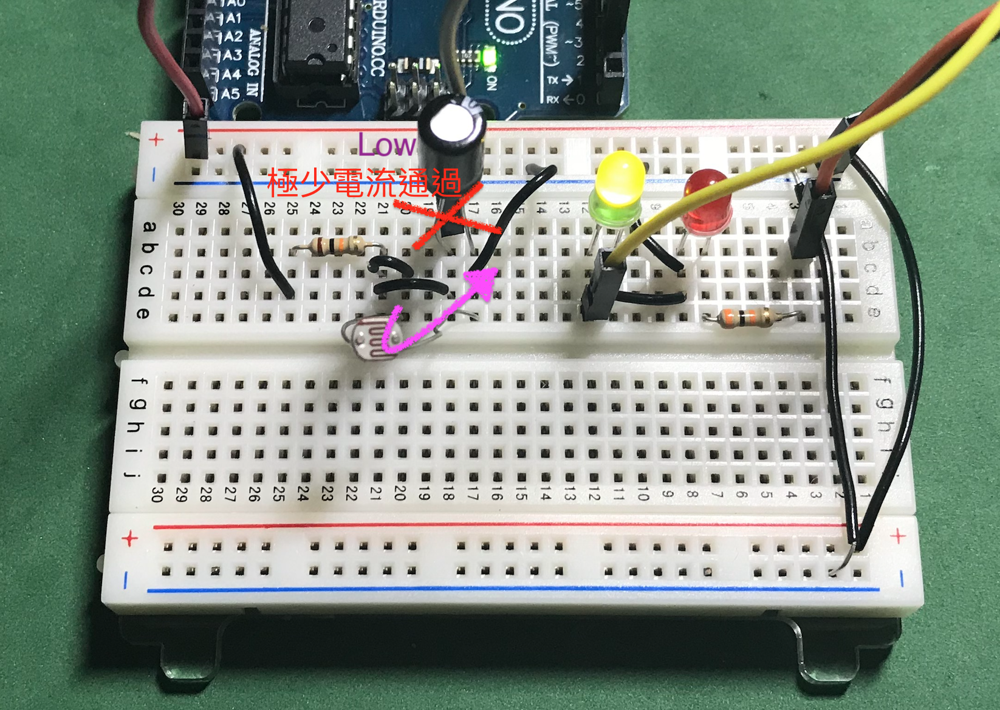
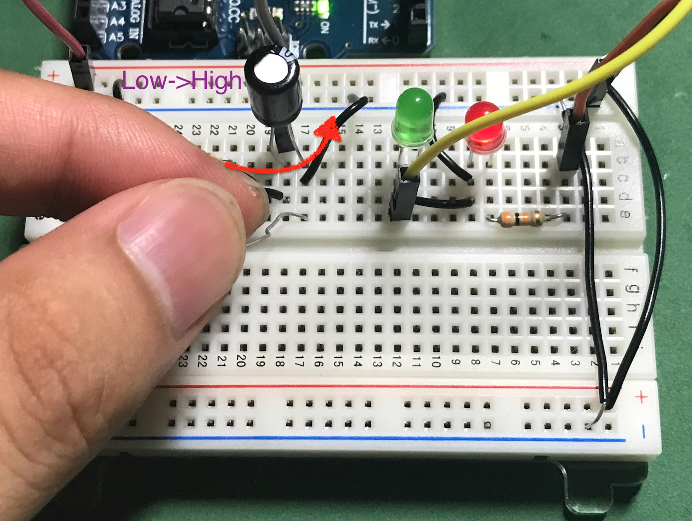

期末報告補充
Circuit Lab介紹
一個可以畫線路的網站

它可以幫助我們輕鬆地畫出所需的電路圖

還可以輸出成PDF 輕鬆把自己的想法分享給其他人

對之後的應用電子學課程有很大的幫助！
ThinkerCAD介紹
它是 AutoCAD 公司出品的線上3D電路模擬網站
如果想要模擬電路，而且想要有「真正接電路的感覺」
這個網站絕對是第一首選！！

自己試做的電容電路-延遲切換(配合Arduino)

當手沒有遮住光敏電阻（光電池）時->綠色燈亮
當手遮住光敏電阻（光電池）時->綠色燈將繼續亮一段時間->再切換成紅色燈亮
光敏電阻(光電池)(PhotoCell)
是一種可變電阻，會依照接觸到它的表面光線的量來改變它的電阻值
有光線時->電阻值下降
沒有光線時->電阻值上升
模擬電路圖：
程式碼：

一般時候（不用手遮光敏電阻時） 電阻值下降
電流幾乎跑光敏電阻這向
電容並無接受到太大電流對它充電
這時Arduino知道該處為低電位 因此讓綠燈亮起

當手遮光敏電阻時 電阻值上升
電流幾乎改跑電容方向 此時電容開始充電（往高電位跑）
這時Arduino知道該處為高電位 因此讓紅燈亮起

當手指再次遮住光敏電阻時 則又等於電容該處開關被關起來
似同斷路 因此電位又降為低電位
實驗影片：
未加電容
加上電阻
謝謝您的支持！！
您的意見 是我改進的原動力
歡迎您將閱讀後的心得告訴我 讓我可以更加進步～～
chen.oscar@hotmail.com
資訊科學系 一年甲班 陳泰元